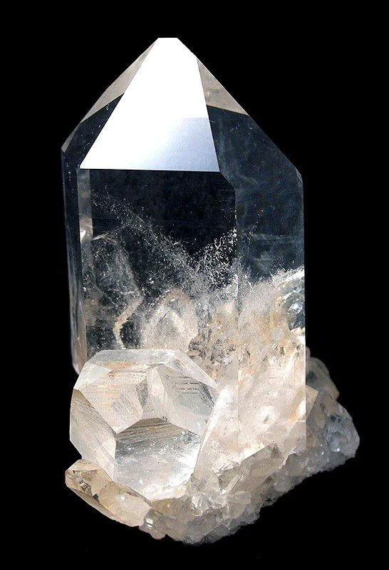

ЧТО ТАКОЕ КРИСТАЛЛ?
Кристаллы – это поразительные создания природы.
Нас восхищают их яркие цвета и прозрачность, ровные,
гладкие грани и, самое главное, правильная форма. Кристаллы
выглядят таким образом, словно их кто-то специально вырезал,
отшлифовал и раскрасил... Именно этому «чуду» и посвящена работа.
Кристалл от греческого krystallos, первоначально – лёд, однако
позже кристалл приобрел и еще одно название - горный хрусталь.
Это твёрдые тела, имеющие естественную форму правильных
многогранников. Эта форма - следствие упорядоченного расположения
в кристаллах атомов, образующих трёхмерно-периодическую
пространственную укладку - кристаллическую решётку.
ИНТЕРЕСНЫЕ ФАКТЫ О КРИСТАЛЛАХ.
1. Знаете ли вы, что кристаллы воспроизводят сами себя и
таким образом растут? Их по праву можно называть "живыми"
существами природы.Самые большие кристаллы были обнаружены в
2000 году в .Пещере кристаллов в шахтовом комплексе Найка, в
мексиканском штате Чиуауа. Некоторые из найденных там
кристаллов гипса достигают 15 метров в длину, а в ширину
— 1 метр.
2. Известен и своими гигантскими, метровыми, кристаллами
минерал сподумен.В 1914 году было опубликовано сообщение,
что в руднике Этта, Южная Дакота, был найден кристалл
сподумена длиной 42 фута (12,8 м) и весом 90 тонн.
3. Музей « Хрустальных миров» в Австрии.Удивительный музей
хрусталя открыт в 1995 году к столетнему юбилею компании
Swarovski. Музей представляет собой интерактивную экспозицию
изделий из хрусталя, где экспонаты можно рассмотреть,
почувствовать, услышать и даже понюхать. Помещение музея
представляет собой подземный лабиринт, где коридорами и
лестницами связаны между собой экспозиционные залы. На входе
посетителей встречает голова великана, глаза которой выполнены
из зеленых кристаллов, а изо рта льется водопад. Согласно
легенде в этих краях жил великан, который бережно хранил
свои несметные сокровища, а теперь охраняет богатства
Хрустальных миров Swarovski. В музее хранятся самый большой
и самый маленький кристалл в мире занесенные в Книгу рекордов
Гиннеса. Самый большой кристалл Сваровски имеет диаметр 40 см
и весит 310 тысяч карат. Диаметр же самого маленького
кристалла составляет всего-навсего 0,8 мм и увидеть его
можно только через микроскоп. Сейчас Хрустальные миры
Swarovski являются вторым по своей популярности музеем
в Австрии.